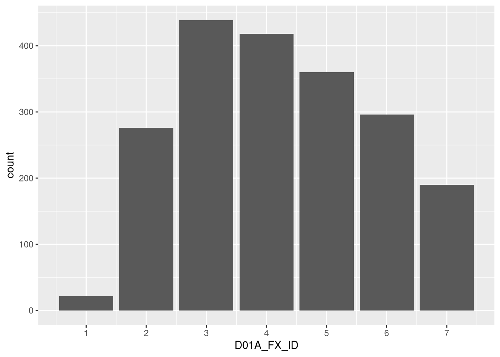
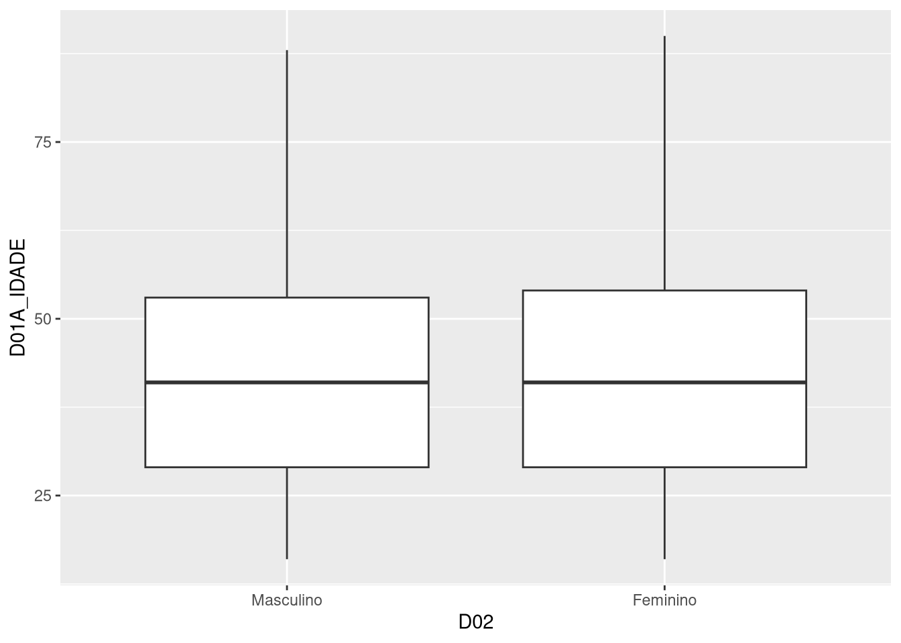
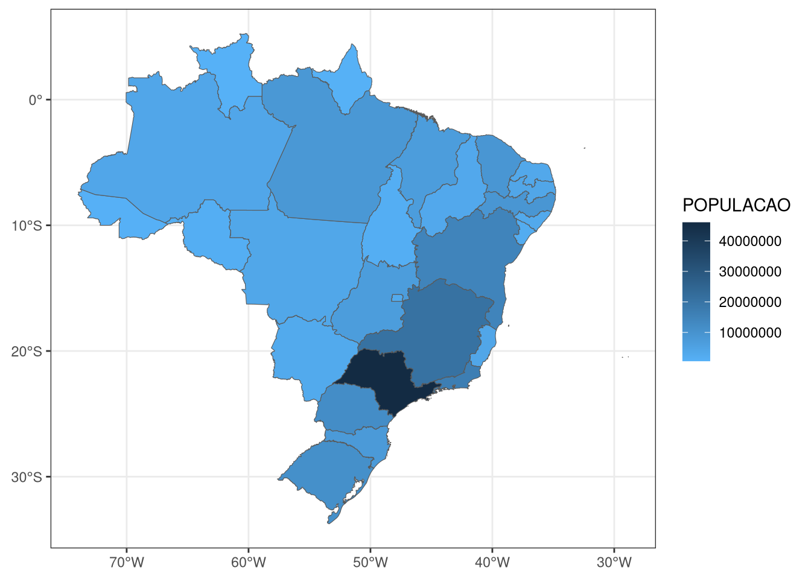

library(tidyverse)4 Visualização
Parte importante do trabalho de análise é a visualização dos nossos dados. Ela pode ser utilizada não só para resumir resultados de pesquisa como, também, para fazer análise exploratória e descobrir padrões. Nesse capítulo, veremos justamente como usar R gerar visualizações que nos ajudem a explorar dados, documentar e exportar resultados de análises.
É possivel gerar visualizações apenas usando R-base, isto é, funcionalidade que já estão disponíveis por padrão no R. No entanto, seguindo que já fizemos em outros capítulos, aqui também adotaremos o tidyverse, particularmente o seu pacote ggplot2, desenvolvido por Wickham (2016) a partir da gramática de grafícos de Wilkinson (2012). A ideia por detrás dessa gramática, adotada pelo ggplot2, é a de que todo gráfico pode ser decomposto em camadas, cada uma delas representando um elemento do gráfico. Abordaremos este tema no capítulo, ainda que brevemente, para facilitar a compreensão da lógica de funcionamento do ggplot2 – pacote que revolucionou o modo de produzir gráficos usando a linguagem R.
Para poder executar os códigos deste capítulo, você precisará carregar o tidyverse:
4.1 Por que usar visualizações?
Dados podem ser apresentados em uma tabela, seja com valores brutos ou resumidos em alguma métrica, como veremos no próximo capítulo. No entanto, como argumentam Kastellec e Leoni (2007), em geral a análise gráfica é mais intuitiva. Compare, por exemplo, a tabela a seguir, que mostra dois indicadores fictícios que variam ao longo dos anos de 2010 a 2024, com a sua versão gráfica, ao lado:
Quando bem feito, um gráfico é capaz mostrar dados de forma precisa, nítida e eficiente Healy (2018). Ele passa a sua mensagem, ou a sua história, sem a necessidade ou o auxílio de um texto.
Para que tenhamos esse visual gráfico claro, preciso e eficiente, vale levar em conta algumas observações de Tufte (1983). Para ele, bons gráficos colocam os dados acima de tudo, ou seja, todo e qualquer artifício de design só deve ser feito exclusivamente para ajudar deixar os dados mais nítidos, e não mais obtusos. A ideia de fundo é que devemos nos concentrar na substância dos dados, e não em qualquer outro elemento, como metodologia ou tecnologia utilizada na produção do gráfico.
Outro ponto importante é que uma boa visualização consegue levar aos olhos comparações de diferentes pedaços de dados disponibilizados – sem, contudo, gerar distorções desses dados, levando em consideração o propósito geral da análise, seja ela exploração ou descrição. Tudo isso considerado, usar visualizações é uma forma de comunicar resultados de forma global, com economia de espaço e sem, se bem feita, sem perda de precisão.
4.2 Fundamentos do ggplot2
De longe o pacote mais utilizado para produzir visualizações em R, o ggplot21 é baseado na gramática de gráficos, que é uma forma de descrever visualizações por meio de camadas. A ideia é que cada camada representa um elemento do gráfico: os dados usados para produzir formas e determinar escalas dos eixos, geometria, coordenadas, facetas e temas. Essa lógica separa, portanto, diferentes partes da produção de um gráfico, o que abre um universo de possibilidades de combinações entre essas camadas.
O que precisamos para fazer um gráfico no ggplot2? Basicamente, penas determinar quais são os nosso dados e a geometria que vamos usar. Para dar um exemplo inicial, usaremos dados de uma das mais tradicionais pesquisas de opinião do Brasil, o Estudo Eleitoral Brasileiro (ESEB), que é realizada periodicamente após eleições nacionais pelo Centro de Estudos de Opinião Pública (CESOP), da Universidade Estadual de Campinas (UNICAMP).2 A base de dados que usaremos é a do ESEB 2022, disponível no formato SPSS no arquivo eseb2022.sav na pasta de materiais complementares deste livro. Para carregar o arquivo, podemos usar a função read_sav do pacote haven:
# Carregando pacotes
library(haven)
# Carregando dados
dados <- read_sav("eseb_2022/eseb2022.sav", encoding = "latin1")Se inspecionarmos a base (com View(dados)), veremos que os labels das variáveis não estão disponíveis. Isso acontece porque a função read_sav carrega apenas os códigos das categorias das variáveis, e não os labels que as descrevem, como vimos no Capítulo 2. Para usar os labels, podemos usar a função as_factor, também do pacote haven:
dados <- as_factor(dados)Com os dados carregados e com labels atribuídos, podemos fazer o seguinte gráfico usando o ggplot:
# Um grafico com ggplot
ggplot(dados, aes(D01A_FX_ID)) +
geom_bar()
No código anterior, utilizamos a variável D01a_FX_ID, que indica a faixa de idade do entrevistado. Na sequência com auxilio do “+” agregamos uma camada de geometria que no caso foi a barra. Perceba que a função ggplot mapeou a base de dados e entendeu que todas variáveis dela agora faz parte do “ambiente” ggplot assim podemos usá-las sem indexar ao objeto dados (dados$D01A_FX_ID). Esse mapeamento já identificou os eixos que nesse caso só foi informado o eixo X na estética (Aesthetic - função aes).
Por sua vez, a camada geometria geom_bar por padrão faz uma contagem dos itens dentro da variável informada, que nesse caso é a faixa de idade, então ela vai fazer a contagem de quantos entrevistados tem em cada faixa. Ou seja, para fazer um gráfico de barras com a contagem de algo podemos informar os dados bruto, sem precisar fazer uma tabela de frequência previamente.
Podemos melhora a capacidade de informar desse gráfico, para isso Temos 5 elementos que consititui a lógica de fazer gráficos no R com ggplot, ou melhor a gramática de gráficos, já usamos dois primeiros, são eles:
- Dados - Conjutos de informações que deseja visualizar e as variáveis que serão mapeados para os atributos estéticos;
- Geometria - Camadas que contém elementos geoméricos e transformações estatísticas, no ggplot e extensões para ggplot as funções começam com prefixo “geom_”;
- Escalas - Refere-se aos valores em um espaço, mas também a cor, tamanho ou forma de atributos do gráfico, além de eixos e legendas. Começam com prefixo “scale_”;
- Coordenadas - O sistema de coordenadas utilizada no plano, por padrão coordenada cartesiana, xy. Estão disponíveis também outros sistemas de coordenadas como polar e projeção de mapas. Começam com prefixo “coord_”;
- Faceta - Para fazer gráficos em subgrupos do mesmo conjunto de dados. Começão com prefixo “facet_”;
- Temas - Controla questões de exibição, como tamanho da fonte cor do plano de fundo, rotação de texto nos eixos, grade, entre outros. Há uma função genérica chama “theme” e o prefixo para temas diversos é “theme_”.
Dito isto, vamos editar nosso gráfico.
Podemos usar uma camada scale_ para exbir os valores (códigos) de todas as faixas de idade. Por exemplo scale_x_contiunous que serve para editar a escala do eixo x quando ele é continuo, no caso varia 1 a 7.
ggplot(dados, aes(D01A_FX_ID)) +
geom_bar() +
scale_x_continuous(breaks = 1:7)Podemos usar essa informação para editar nosso gráfico. Para isso dentro do aes vamos transformar nossa variável de interesse em texto, e no lugar de usar uma escala continua vamos usar uma escala discreta para alterar os valores do eixo x.
ggplot(dados, aes(as.character(D01A_FX_ID))) +
geom_bar() +
scale_x_discrete(labels = c("1" = "16-17",
"2" = "18-24",
"3" = "25-34",
"4" = "35-44",
"5" = "45-54",
"6" = "55-64",
"7" = "65+"))Para altera nomes dos eixos, títulos e subtítulos, por exemplo, podemos usar a função labs em mais uma camada.
ggplot(dados, aes(as.character(D01A_FX_ID))) +
geom_bar() +
scale_x_discrete(labels = c("1" = "16-17",
"2" = "18-24",
"3" = "25-34",
"4" = "35-44",
"5" = "45-54",
"6" = "55-64",
"7" = "65+")) +
labs(title = "Entrevistados por faixa de idade",
subtitle = "ESEB - 2022",
x = "Faixa de Idade",
y = "N") Essa grade por trás das barras não traz nenhuma informação relevante para esse gráfico, assim como a cor de fundo. Então podemos retirar esses elementos deixando o gráfico mais limpo em termos de informação desnecessaria, para isso podemos aplicar um tema diferente do padrão do ggplot.
ggplot(dados, aes(as.character(D01A_FX_ID))) +
geom_bar() +
scale_x_discrete(labels = c("1" = "16-17",
"2" = "18-24",
"3" = "25-34",
"4" = "35-44",
"5" = "45-54",
"6" = "55-64",
"7" = "65+")) +
labs(title = "Entrevistados por faixa de idade",
subtitle = "ESEB - 2022",
x = "Faixa de Idade",
y = "N") +
theme_classic()Dependendo do uso que vamos fazer, é preferivél ter os valores da quantidade de entrevistados direto em cada barra, assim, podemos aplicar mais uma camada com a função geom_text
ggplot(dados, aes(as.character(D01A_FX_ID))) +
geom_bar() +
scale_x_discrete(labels = c("1" = "16-17",
"2" = "18-24",
"3" = "25-34",
"4" = "35-44",
"5" = "45-54",
"6" = "55-64",
"7" = "65+")) +
labs(title = "Entrevistados por faixa de idade",
subtitle = "ESEB - 2022",
x = "Faixa de Idade",
y = "N") +
geom_text(stat = "count", aes(label = ..count..),
vjust=-0.2) +
theme_classic()Com estamos usando os micro-dados e toda operação aritmética está sendo feita dentro do ambiente do ggplot, é necessário informa na função geom_text qual é a estatística que está sendo feita que nesse caso é contagem (o padrão da função geom_bar). Nesse caso a estética é o valor dessa contagem que é recuperado pelo operador “..count..”, foi também adcionado um ajustamento vertical, que quando é possitivo os valores são plotados mais próximo do eixo x e negativo mais longe do eixo de referência (vjust eixo x, hjust eixo y).
Suponha que em seu projeto de visualização de dados as informações do eixo y sejam desnecessária uma vez que já está direto acima da barra. Podemos usar nossa função genérica theme para fazer essa edição. Como ja estamos usando um tema, a camada com a função genérica vai logo após o tema em uso.
ggplot(dados, aes(as.character(D01A_FX_ID))) +
geom_bar() +
scale_x_discrete(labels = c("1" = "16-17",
"2" = "18-24",
"3" = "25-34",
"4" = "35-44",
"5" = "45-54",
"6" = "55-64",
"7" = "65+")) +
labs(title = "Número de entrevistados por faixa de idade",
subtitle = "ESEB - 2022",
x = "Faixa de Idade",
y = "N") +
geom_text(stat = "count", aes(label = ..count..),
vjust=-0.2) +
theme_classic() +
theme(axis.line.y = element_blank(),
axis.text.y = element_blank(),
axis.ticks.y = element_blank(),
axis.title.y = element_blank())Observem que mesmo mantendo na função labs y = “N”, esse elemento não fica no gráfico porque foi subtituído na função theme por um elemento em branco - element_blanc no argumento axis.title.y. Bem, todos elementos de exibição do gráfico pode ser controlado por essa função theme, inclusive pode ser usada para você criar o próprio tema.
Vamos agora fazer um novo gráfico com a mesma geometria (barra), sendo que com os dados já agregado em algum nível. Para isso vamos usar os dados do tamanho da população do Brasil por Estado, a partir da parcial do censo 20223.
options(scipen = 999)
dados <- read.csv2("data/POP2022_Brasil.csv", fileEncoding = "latin1")
ggplot(dados, aes(reorder(Unidades_Federacao, POPULACAO), POPULACAO)) +
geom_bar(stat = "identity") +
labs(title = "População Brasileira por Estado",
subtitle = "Censo - 2022 (IBGE)",
y = "N") +
coord_flip() +
theme_classic() +
theme(axis.line.y = element_blank(),
axis.title.y = element_blank())
Repetimos basicamente o mesmo código do gráfico com os dados do ESEB. As principais alterações foram: 1) no aes, foi incluir um valor para y (POPULACAO), e 2) na geometria (geom_bar) incluir o argumento stat igual a “identity”, que informa que não é necessário fazer qualquer transformação no dado, ele vai ser usado do jeito que veio.
No mais, algumas alterações foram feitas para melhorar a visualização: 1) no elemento x foi incluído uma função reorder que reodena os valores de x a partir de um valor qualquer, no caso escolhemos o próprio valor da população contido na variável “POPULACAO”; 2) como os labels das unidade da federação são relativamente grandes usamos a função coor_flip para que os labels que iam aparacer orginalmente no eixo x, seja exibido no eixo y, o mesmo com o eixo y, ou seja, uma mudança nos eixos.
Observe que na nossa função genérica de gráfico excluimos os dois argumento refentes a ticks (traços) e texto do eixo y, com isso o gráfico voltou a exibir o rótulo de cada coluna (unidade da federação) e os respectivos traços.
Além do gráfico de barras que exploramos o ggplot tem outros tipos de gráficos (geometrias) nativos, que já vem inclusa quando instalamos o pacote, tais como: linhas - geom_line, barra de erro - geom_errobar, disperção - geom_point, histograma - geom_histogram entre outras.
GGPLOT - Extensões
Além das geometria nativas você pode adicionar outras geometrias e temas, por exemplo. Para isso você pode criar suas próprias extensões ou instalar a que outros desenvolvedores fizeram. Para instalar você pode procurar pacotes. O tidyverse organiza e disponiliza informações para coleção bastatante rica: https://exts.ggplot2.tidyverse.org/gallery/4. Que tem por exemplo o gganimate para fazer gráficos animanos em gif, ou o ggdag para desenhar relações clausais, ou o ggpol para plotar seus em formato de parlamentos.
Vamos usar os dados anteriores para criar um mapa, onde cada estado será colorido pela quantidade da populacação identificada pelo IBGE. Mas para isso vamos precisar ter um objeto com as informações geográficas (geolocalização) dos estados. Temos na nossa pasta data tem um arquivo que tem essas informações, o shp_uf_brasil.Rds. Mas você poderia para o caso brasileiro usar o pacote geobr. De todo modo se você quiser trabalhar com outras geolocalização basta procurar um pacote específico, e se não tiver, procurar o shapesfile (shp) da região que você precisa.
Para criar o nosso mapa vamos unir (fazer um merge) as informações geográficas do objeto estado com as informações do censo do objeto dados. Depois vamos usar a geometria geom_sf para criar o mapa.
estados <- readRDS("data/shp_uf_brasil.Rds")
estados <- merge(estados, dados,
by.x = "name_state",
by.y = "Unidades_Federacao")
ggplot(estados) +
geom_sf(aes(fill = POPULACAO)) +
scale_fill_gradient(low = "#56B1F7", high = "#132B43") +
theme_bw()
Com essa geometria geom_sf não precisamos atribuir um x ou um y na aes, pois, x e y serão as coordenadas geográficas contidas na variável “geometry” do nosso objeto estados que é da class sf. Então atribuímos apenas um fill para colorir os estados, neste caso, em uma escala continua porque a váriavel população é continua. Se fosse uma variável categórica o ggplot compreenderia que a escala de cores seria discreta, uma cor para cada categoria.
Erros
Se eventualmente ocorrer um erro referente a função geom_sf - error in compute_layer(), ou similar. Carregue o pacote “sf” - library(sf), considerando que já está instalado, se não instale primeiro. Pois, esse é o pacote que originalmente criou a geometria geom_sf e outras funções para trabalhar com dados geolocalizados.
4.3 Resumo
Neste capítulos estudamos os principais conceitos para produção de gráfico no R a partir do pacote ggplot. Usando micro dados e dados já sumarizado para compreendermos como funcionao o ambiente ggplot e o processo de adição de camadas para criarmos o nosso projeto gráfico. É fato que não exaurimos todas as possibilidades mas seguimos uma trilha que abre novos caminhos possbilidades para executar a tarefa de produzir vizualizações com mais eficiência e agilidade.
4.4 Indo além
Produzir uma vizualização que atenda necessidades acadêmicas ou de mercado devemos considerar além da geometria adequada, devemos considerar como vamos colorir nossos gráficos. Embora, em trabalhos acadêmico seja majoritário o uso de preto ou escala de cinza, háverar momentos que vamos precisar de usar uma paleta de cores de diferentes, o ggplot ja tem algumas paletas elaboradas para isso, considerando escalas de divergência, sequência e qualidade (RColorBrewer). Recomandamos você buscar aprender mais sobre isso, pois, uma escolha errada pode deixar o gráfico ilegível para pessoas com daltonismo, por exemplo.
4.5 Exercício
1 - Quais dos elementos abaixo são imprecindiveis para gerar um gráfico?
- dados
- geometria
- tema
- dados e geometria
- dados e tema
2 - A coordenada polar é o principal sistema e coordenadas do ggplot, sendo usado por padrão. Essa assertiva é:
- Verdadera ()
- falsa ()
Carregue arquivo
populacao_brasil.xlse criar um gráfico de linhas, onde o eixo x será os anos e eixo y a população brasileira, considere deixar o gráfico mais informativo possível com mínimo de elementos designer possível.Na função ggplor dois elementos da gramtática de gráficos são fundamentais, quais são?
- dados
- estética (aesthetics)
- facet
- dados e color
- dados e estética
- Após definimos os argumentos da função ggplot, que elemento da gramática de gráficos fica faltando para gerar o gráfico?
- facet
- theme
- geom
- scale
- coord
- Para construir um gráfico usando o ggplot, o fazemos por camadas, qual operador usamos para adcionar cada camada?
- %>%
- %<>%
- <-
- =
- Quando utilizamos a geometria de barras (geom_bar) o argumento stat igual a ‘identity’ é obrigatório quando estamos utilizando micro-dados no ambiente ggplot. A assertiva é:
- verdadeira ()
- falsa ()
- Considere o arquivo sobre gastos e votos para governadores
governador_18_22.Rds, e a partir dele queremos criar um gráfico que relacione estas duas variáveis por eleição, qual seria a melhor apresentação?
- x = % gastos, y = % votos + geom_bar
- x = % gastos, y = % votos + gem_line
- x = % gastos, y = % votos + geom_point
- x = % gastos, y = % votos, color = ano_eleicao + geom_point
- x = % gastos, y = % votos + geom_point + facet = ano_eleicao
9 - O tema void theme_void é um tema praticamente vazio que só preseva a a geometria e linhas horizontais (grid). A assertiva é:
- verdadeira ()
- falsa
10 - para editar temas podemos usara função genérica theme. Quando usamos o argumento axis.text.x podemos alterar:
- os rótulos dos valores do eixo x
- o título do eixo x
- os rótulos e título do eixo x
- marcas de escala no eixo x
- o título no eixo y
Normalmente mencionamos
ggplotquando estamos falando do pacoteggplot2, utilizado para produzir gráficos.↩︎O ESEB é conduzido desde 2002 e é vinculado ao Comparative Study of Electoral Systems Project (CSES), projeto global de pesquisas pós-eleitorais. Para saber mais sobre o ESEB, ver https://www.cesop.unicamp.br/por/eseb.↩︎
Lançada pelo IBGE em junho de 2023↩︎
https://exts.ggplot2.tidyverse.org/gallery/↩︎